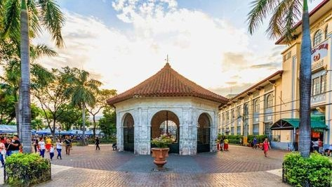
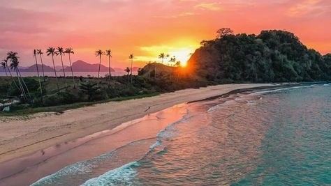
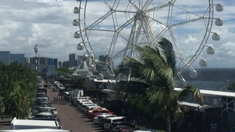
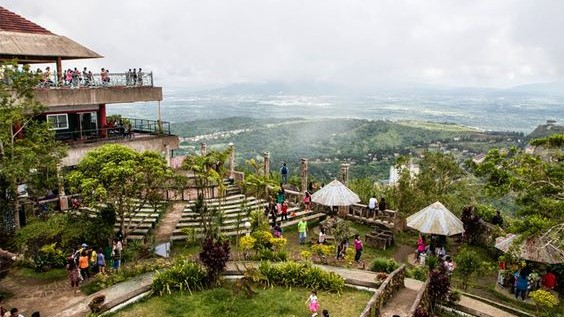

-------------------------------------------------------------------------------------------------------------------------------------------------------------------------------------------------------------------------------------------
-------------------------------------------------------------------------------------------------------------------------------------------------------------------------------------------------------------------------------------------
| Cebu | El Nindo, Palawan | Manila Bay / Mall of Asia | Picnic Grove, Tagayaty |
|---|---|---|---|
 |
 |
 |
 |
Cebu is rich with history that started the nation. Spaniard colonized us for almost 300 years and thats the first stoping ground of magellan who helped us get free from the colonization. It is filled with beautiful resorts and a tourist spot for people around the country and others that loves history. It has wonderful foods like lechon where in my opinion has the best lechon in the world! |
In this Picture its is El Nindo, Palawan it has alot of great nature and beaches. It has white sand which is clean and alot of volunters clean it everyday. it has clear waters too it visited by alot of Filipinos durig summer when everyone is on break and want to take vacations. Well this is a wonderful place to do soo. |
Manila bay has been there for years but now its been cleaned and well maintained. There are food stalls and alot of games and Attractions like the most well known Moa Eye. Especially in new years they have alot of fireworks shows. The smell of the ocean is very good and they let people sit on the fence which theyhave a great view of the sunset. |
Tagaytay has great sunsets and it is ontop of a mountain which means when you are driving up there there are alot of slopes. People have picnics there and it is super cold during the cold season and Starbucks is a place whee they really buy alot since its nice up there. It is great for tourists that want to watch the sunset. |
| References | Made by : Chelsea Anika P. Cham 9-Emerald | ||
| Backround : https://www.pinterest.ph/pin/365565694766479179/ | |||
| Cebu : https://www.pinterest.ph/pin/543457880030854548/ | Palawan : https://www.pinterest.ph/pin/392305817553397462/ | ||
| Manila Bay : https://www.pinterest.ph/pin/304344887289966109/ | |||
| Tagaytay : https://www.pinterest.ph/pin/657244139353972062/ | |||